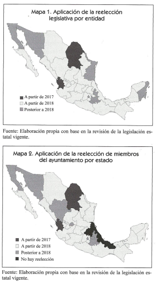

Galimatías y dilemas
por
Patricio Ballados V.1
La reforma político-electoral de 2014 recuperó la figura de reelección inmediata en el sistema electoral mexicano. Después de ocho décadas de veda,2 los representantes de elección popular —con excepción del Presidente de la República y los gobernadores— pueden buscar un mandato consecutivo. Esto es, senadores diputados federales, diputados locales y miembros de ayuntamiento tienen la oportunidad de participar y mantenerse en el cargo por periodos adicionales, si así lo decide en las urnas.
La no reelección fue inherente al sistema electoral que se confeccionó a lo largo del siglo xx en México, particularmente por la carga negativa asociada a la permanencia indefinida del Ejecutivo. El tema que en México ha generado resistencias y largos debates es una práctica añosa y ordinaria en el ámbito mundial: éramos una anomalía. En Estados Unidos, por ejemplo, la reelección se planteó desde que se formó la federación hace tres siglos. Entre padres fundadores se daba por sentada la reelección como mecanismo natural que permitía la profesionalización, entendida como "el dominio de los asuntos públicos.3
La reelección se permite en democracias latinoamericanas de distintas características: regímenes presidencialistas y parlamentarios, gobiernos nacionales y federales, poderes legislativos bicamerales y unicamerales. Actualmente, Costa Rica es el único país en América Latina que prohíbe la reelección legislativa.4
En un sistema electoral como el mexicano, donde prima la regulación exhaustiva de procesos, la admisión de nuevas figuras produce tensiones y dilemas, ya que deben de adecuar un sistema sumamente regulado.
Este artículo plantea algunos retos y dilemas que se han presentados o presentarán respecto a la reelección. El objetivo es enunciar problemas para apuntar áreas específicas que requerirán mayor regulación o criterios de interpretación por parte de los operadores en materia electoral. Se aborda, en específico, la paridad degenero y la reelección.
¿De qué hablamos cuando hablamos de reelección?
Una primera interrogante tiene que ver con la naturaleza de la reelección. ¿Qué es, un mecanismo o un derecho político? Si es lo último, ¿a quién le pertenece el derecho, al individuo o a los partidos políticos que postularon la candidatura? ¿Se trata de un derecho o de una expectativa de derecho?
Como se planteó la reelección en México, se podría deducir que la posibilidad de reelegirse por la vía partidista exige la conjunción de dos voluntades, la del aspirante y la del partido político postulante. Eso ocasiona, por lo menos, dos problemas. En primer lugar, existiría una posible desventaja o ausencia de equidad de los aspirantes de la vía ´partidista frente a los de la vía independiente, ya que estos últimos solamente necesitarán una sola voluntad para relegirse: la propia. En segundo lugar, ya que existe la necesidad de que concurran dos voluntades para la reelección, ¿el partido político tendrá el derecho de prohibir la reelección del aspirante? En el caso de una controversia entre estos actores, ¿qué primaría?
Sentencias recientes del Tribunal Electoral del Poder Judicial de la Federación (TEPJF) han ofrecido criterios de interpretación para entender la naturaleza jurídica de la reelección. La sala superior ha resuelto sentencias a favor de aspirantes a la elección consecutiva utilizando el criterio pro persona en sus interpretaciones. En la controversia que se suscitó entre el presidente municipal de Ahuacatlán, Nayarit, y el organismo público local de ese estado,5 la Sala Superior determinó que la negociación de la elección consecutiva a los actuales miembros del ayuntamiento por parte del Instituto Electoral del Estado de Nayarit implicó una negación al derecho de votar y ser votado. Por lo tanto, bajo un criterio que tendiera a favorecer la protección d derechos de manera más amplia (pro persona), la Sala Superior permitió la reelección de ayuntamientos para el periodo 2017-2021.
Recientemente, la Sala Superior confirmó la decisión de la Sala Regional con sede en Monterrey de otorgarle el registro de candidata a presidenta municipal a María Guadalupe Oyervides Valdez, que tomó protesta como regidora en Monclova antes de la Reforma Constitucional de 2014.6 La Sala Regional en su sentencia dictó que la "prohibición de la reelección se vincula con el derecho fundamental al voto en su doble aspecto, de ser votado de la candidata y de votar de la ciudadanía en general". Por lo tanto, las normas que regulen la reelección deberían de interpretarse bajo el principio pro persona.7 Y así, se determinó que la reelección solamente se aplica cuando un aspirante se postula al mismo cargo.
Estas decisiones jurídicamente han sentado antecedentes para definir la naturaleza jurídica de la reelección. Se le ha visto como parte o extensión del derecho fundamental a votar y ser votado. De ahí que las resoluciones del TEPJF hayan sido en favor de aspirantes tanto en Nayarit como en Coahuila. Falta ver si para la sede jurisdiccional se trata de un derecho como tal o una expectativa de derecho que podría suponer una tutela menos generosa a las personas frente a los partidos.
1 Algunos dilemas
Paridad de género. Si bien existe la obligación de cumplir con el principio constitucional de paridad, ¿cómo armonizar esta obligación de los partidos con la voluntad de reelegirse en legislaturas donde predomine el sexo?
Mosaico electoral. La reforma de 2014 estableció ciertas reglas de observación general para las entidades y dejó un amplio margen para regular la elección consecutiva. Esto derivó en reglas distintas, por ejemplo, con respecto a la solicitud delincuencia para aspirar a una candidatura,8 diversidad que abrirá la puerta a muy disímiles escenarios que pondrán en tensión la posibilidad de emitir reglas de interpretación uniformes. Por ejemplo, en San Luis Potosí existe una regulación que permite únicamente un candidato independiente por cada cargo en disputa. En caso de que, por ejemplo, una disputa independiente pretenda reelegirse, ¿su derecho le da para aparecer en la boleta de forma automática, o solo para recabar firmas y luego se determine cúal persona cuenta con mayor respaldo para registrarla como candidata?
Vida partidista. En los artículos transitorios de la reforma electoral no se estableció la obligación de que los partidos adecúen sus documentos básicos al mecanismo de reelección. Actualmente existen diferentes disposiciones sobre los requisitos para buscar una candidatura sin distinguir si se trata de un caso de reelección. Como resultado, podríamos estar frente a requisitos de elegibilidad dispares que pudieran llevar a cuestionar la equidad del proceso derivado de la normatividad interna de los partidos y no de una exigencia del marco legal estatal, por ejemplo, sobre la obligación de presentar una solicitud de licencia o de separación del cargo. Por mencionar un caso, el PRI y Morena los representantes populares deben renunciar a su cargo con anterioridad a las contiendas internas, lo que los pondría en desventaja frente a sus colegisladores de otros partidos.
Representatividad. La reforma constitucional y la Ley General de Instituciones y Procedimientos Electorales permiten la reelección legislativa por ambos principios, a saber, mayoría relativa y representación proporcional. Sin embargo, no queda claro si la relección fue penada para extender el periodo en la integración de un órgano (Congreso federal o local) o si debe estar estrechamente ligada a la representación del legislador a sus electores. La forma en que fue regulada en la legislación estatal refleja que no existe consenso sino múltiples interpretaciones sobre la naturaleza de la relección como mecanismo dentro del sistema electoral mexicano: ¿a quiénes representan los legisladores de representación proporcional en México? ¿Cómo se justifica la reelección en ese caso, si se argumentó como un mecanismo para hacer más estrecho el vínculo ente el legislador y la ciudadanía?9
Distritación. Este dilema está íntimamente relacionado con el anterior, púes un cambio en la geografía nos obliga a preguntarnos si un legislador elegido por un conjunto de ciudadanos (distrito A1) podría refrendar su mandato por un conjunto distinto. Es decir en caso de un proceso de distritación altere el polígono original y desagregue el distrito A1 y sumando parte del distrito B1, ¿cómo justificar ese ejercicio de rendición de cuentas con el voto de ciudadanos a quienes no representó el legislador en su primer periodo?
Fiscalización. Como se mencionó previamente, en algunas entidades no se solicita la separación del cargo para buscar reelegirse. En esos casos, ¿el aspirante podría mantenerse en el cargo para realizar campaña sin afectar la equidad de la contienda?, ¿bastará con un marco regulatorio especial y exhaustivo?, ¿el sistema de fiscalización en México es adecuado para supervisar este tipo de supuestos?
En esta entrega, dadas las limitaciones de espacio, abordé únicamente el dilema de la paridad de género.
2 Paridad de género
La participación formal de las mujeres como candidatas ha dado un vuelco en el último cuarto de siglo. Desde las cuotas voluntarias, las obligatorias y finalmente la paridad, la legislación electoral ha ido cerrando los huecos que permitían negar un derecho fundamental a las mujeres. Ha sido determinante también la interpretación jurisdiccional.
Hasta hoy, además de un principio (amplio) de paridad, la legislación prevé tres obligaciones adicionales de los partidos políticos:
- Participación efectiva de ambos sexos en la integración de los órganos partidistas y la postulación de candidaturas.
- Criterios objetivos y púbicos para garantizar paridad en las candidaturas.
- Prohibición de postular únicamente candidatos de un sexo en los distritos con votación más baja para el partido.10

Figura 1: Elecciones en 2018
Con respecto a esta última regla, el INE emitió el acuerdo INE/CG162/2015 para verificar que efectivamente no existiera un sesgo notorio hacia un solo sexo en la postulación de candidaturas al congreso de la Unión.11
En la práctica, esas reglas lograron la paridad en las postulaciones y se reflejaron en un avance hacia la paridad en la integración de los órganos. No obstante, de no ser regulado de forma adecuada, la reelección puede atentar contra lo ganado en materia de paridad. El dilema no es menor. Se tendrá que ponderar qué derecho debe prevalecer cuanto entren en coalición. La controversia puede asemejarse a la tensión con los "mecanismos de democracia directa" que utilizaban los partidos para darle vuelta a la cuota de género. Recordemos que frente a ese dilema el TEPJF optó por la cuota en la multicitada sentencia 12624. Veamos algunos posibles dilemas.
Siguen existiendo legislaturas conformada mayoritariamente por un mismo sexo. Por ejemplo, el Congreso estatal de Morelos está integrado por 15 diputados de mayoría relativa (MR) y nueve de representación Proporcional (RP), frente a tan solo tres diputados de MR y tres de RP. Es decir 80 por ciento de hombres. En sentido contrario, en el congreso chiapaneco predominan las mujeres, con 13 legisladoras de MR Y 11 de RP. Si estos congresos la mayoría de los legisladores buscarán la reelección,12 ¿cómo convivirán las reglas de paridad frente al derecho de votar y ser votado? Por un lado, los partidos políticos estarían obligados legalmente a respetar la paridad en las postulaciones. Por el otro, esto impondría una restricción al número de legisladores que pudieran buscar la relección al contender en un proceso interno si sus distritos rentables están ocupados mayoritariamente por un sexo.
Sin duda, estas interrogantes tendrán que ser resueltas por las autoridades electorales federales y locales conforme se presentan algunos casos hipotéticos aquí señalados. Ello no obsta para que discutamos y pensemos en posibles soluciones y sus implicaciones. A escasos meses del inicio del proceso electoral federal, cualquier avance será una enorme ganancia.
Figura 2: Características de la reelección legislativa y de ayuntamientos
Nota al pie de página:
Director Ejecutivo de Prerrogativas y Partidos Políticos del Instituto Nacional Electoral. Este artículo fue publicado con el título "Galimatías y dilemas" en la revista Voz y voto, número 292, junio 2017. El autor ha dado su autorización para reproducirlo aquí.
La reforma del 29 de abril de 1933 incorporó en el artículo 59 constitucional que los senadores y diputados del Congreso de la Unión no podrán ser reelectos para el periodo inmediato.
Véase El Federalista núm. 53 para conocer la reflexión de Hamilton y Madison al respecto.
México prohibía la reelección inmediata y Venezuela en la Constitución de 1999 establecía que los diputados podía reelegirse por dos periodos como máximo. En el resto de los países del continente no había regulación alguna. Carey, John M. (2003). “The reelection Debate in Latin America”, Latin American Politics and Society, 45:1, pag. 130.
SUP-JDC- 101/2017 y SUP-JRC- JRC-63/2017 acumulados. Resuelto el 5 de abril del 2017. En este primer antecedente, la Sala Superior resolvió la controversia entre José de Jesús Bernal Lamas (Presidente municipal de Ahuacatlán por el periodo 2014-2017), y el OPLE de Nayarit. Por la obligación constitucional de homologar comicios locales con federales [art. 116, fracción iv, incisos a) y n)], en Nayarit se reformó la constitución y se estableció que por única ocasión el cargo de ayuntamientos duraría cuatro años (2017–2021). En ese contexto, el presídete municipal consultó al IEEN sobre la posibilidad de contender por el mismo cargo de elección para el periodo 2017-2021. El IEEN respondió que "no es posible su reelección, toda vez que el mandato del ayuntamiento al que quiera postularse tendrá una duración de cuatro años, existiendo una prohibición constitucional". La sala Superior atrajo la demanda de JDC presentada por el alcalde ante esa respuesta negativa y resolvió a favor de la reelección del presidente municipal por periodo adicional.
SUP-REC-1172/2017. Resuelto el 10 de mayo de 2017.
SM-JRC-7/2017. Resuelto el 1 de mayo de 2017.
En la mayoría de los estados no se plasma la separación del cargo para la candidatura para diputados. Sólo en 12 se menciona de manera explícita y sólo en Querétaro no es necesario separase del cargo. Para los candidatos al ayuntamiento en la mayoría de los estados sí se contempla la licencia explícita. En Tamaulipas no es necesaria, y en Quintana Roo, sólo para regidores y síndicos.
En el dictamen de las Comisiones del Senado del 2 de diciembre de 2013 se justificó la relección legislativa de la siguiente manera: “Estas Comisiones Dictaminadoras estimamos que la reelección inmediata o elección consecutiva de los legisladores trae aparejadas ventajas, como son: tener vinculo más estrecho con los electores, ya que serán estos los que ratifiquen mediante su voto a los servidores públicos en su encargo, y ello abonará a la rendición de cuentas y fomentará las elaciones de confianza entre representantes y representados.
Ley General de Partidos Políticos, art. 3, numerales 3,4 y 5.
El método que el Consejo General aprobó para verificar fue el siguiente: para cada partido, se listaron todos los distritos en los que presentó una candidatura a diputación federal, ordenadas de menor a mayor conforme al porcentaje de votación recibido en el proceso electoral anterior. Se dividió la lista en tres bloques: 1° con los distritos donde el partido obtuvo la votación más baja, 2° con los distritos donde obtuvo una votación media y 3° con os distritos donde obtuvo la más alta. Del primer bloque se revisó la totalidad de los distritos para identificar algún sesgo que favoreciera o perjudicara a un sexo en particular; es decir, si se encontraba una notoria disparidad en el número de personas de un sexo. Y se revisaron los últimos veinte distritos del tercer bloque, en los que el partido obtuvo la votación más baja en la elección anterior, para identificar si en este grupo más pequeño se apreciaba o no algún sesgo.
Esta suposición no resulta tan descabellada se considera la tasa de reelección en otros países democráticos. De manera sintética analizo el caso de Estados Unidos. Si tomamos datos de la elección del año pasado observamos que en el ámbito federal prácticamente nueve de cada diez legisladores busca la reelección: 85 por ciento en el Senado y 90 por ciento en la Cámara de Representantes. Este porcentaje baja al revisar los congresos estatales pero sigue siendo una tasa muy alta: ocho de cada diez busca permanecer en el cargo.